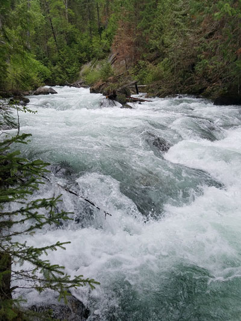
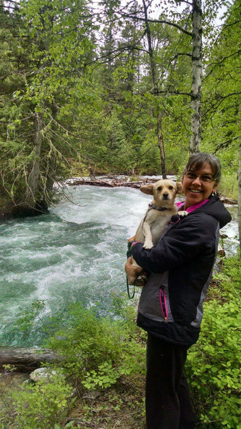
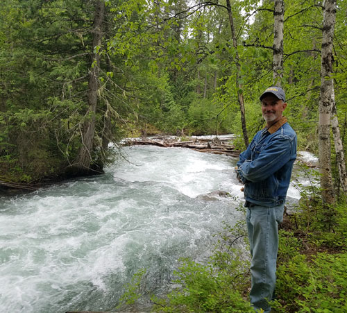
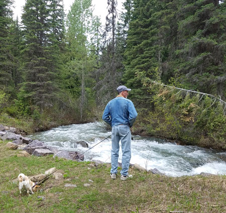
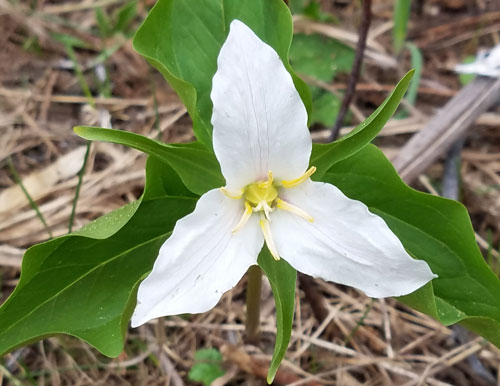
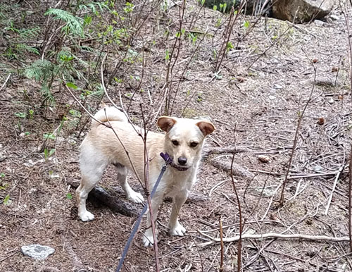
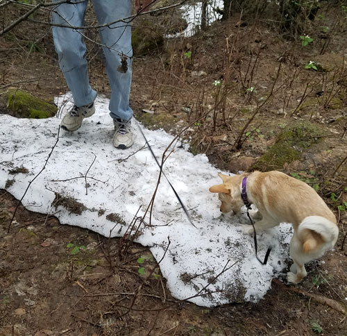

| One evening after Eric got off of work, we
decided to take a drive up to the Graves Creek area to see how it looked
after last year's fires. It was surprisingly still beautiful after
all that destruction, so we were very thankful for that. This is a
beautiful area so close to Eureka so it is a blessing that it is still a
nice place to go. |
|
 Here also the runoff is coming down fast |
 |
| Buddy looks like he thinks I'm going to throw him in! Maybe he has already learned that I'm really clumsy. |
|
 |
 |
| Handsome guy near the creek. | At Stahl Creek campground, one of Eric's old haunts. Buddy checks out
a hole in the ground while Eric watches the creek. |
 |
 |
| Mountain flower | Cute dog |
 |
|
| As far as we know, this is Buddy's first experience with snow. He
investigated for a couple of minutes, then had a blast playing around on it. |
|